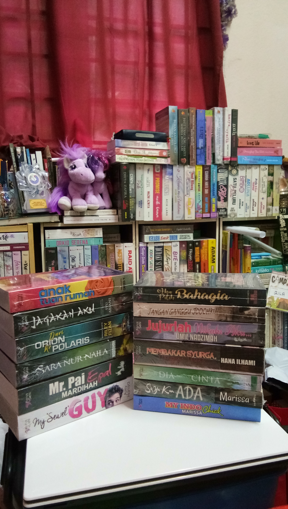
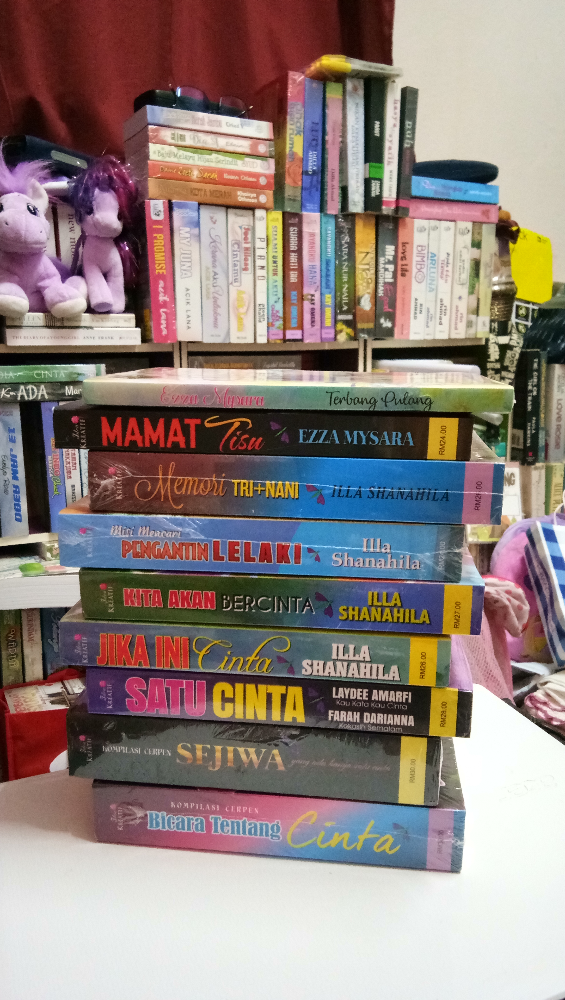
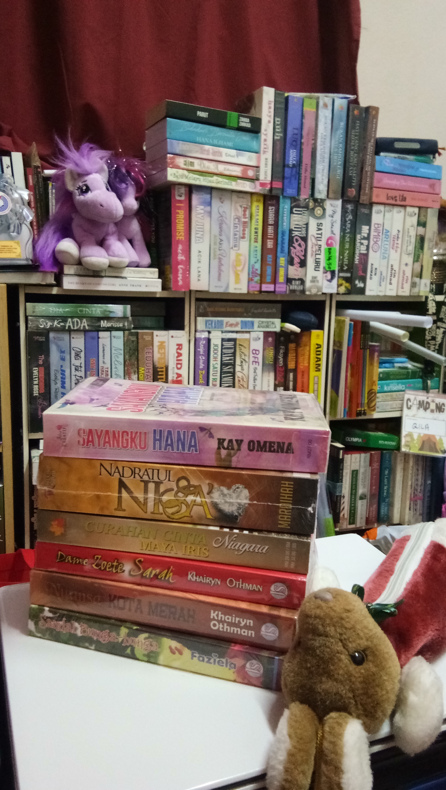

Hobby time

MY HOBBY
So, now let me tell you what i love to do.
My all time hobby is reading books. I love to read all kinds of genre for English and Malay novels. For the time being, I already collected 538 Malay novels and 388 English novels. I keep and arrange all my books collection in my room because I want to avoid the "small" hand from taking and ruined my books.
  
I also like to buy magazines of Reader's Digest. I always make sure to bring along at least a magazine or novel in my bag especially when I go somewhere long journey. When I am backpacking, I will just buy the ebook version to reduce the items and weight to bring.
When I visit any place, I will make sure to buy at least a book for my own souvenir. I do this to reminisce my hobby and the place that i have already visited.